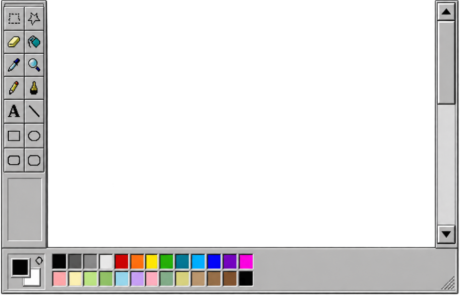

My Portfolio - Paint File Edit View Image  Open My Folder.Explore My Work 아이디어부터 완성된 화면까지 차곡차곡 모아온 디자인 작업을 소개합니다
PROFILEUI / UX & WEB DESIGNER 이름 ·김예림 지원 분야 ·신입 웹디자이너 관심 업무 ·웹·모바일 UI 디자인 / 쇼핑몰 콘텐츠 디자인 / 기초 퍼블리싱 교육 ·그린컴퓨터아카데미 성남분당점 · 웹디자인/프론트앤드 · 2026.05.26 - 2026.10.16 이메일 ·kim7331615@naver.com
Notion프로젝트 일정과 할 일을 정리하고, 작업 진행 상황을 기록할 수 있습니다.참고 자료와 회의 내용을 문서화하여 팀원들과 공유할 수 있습니다.수업자료를 정리하고 복습에 활용하였습니다.